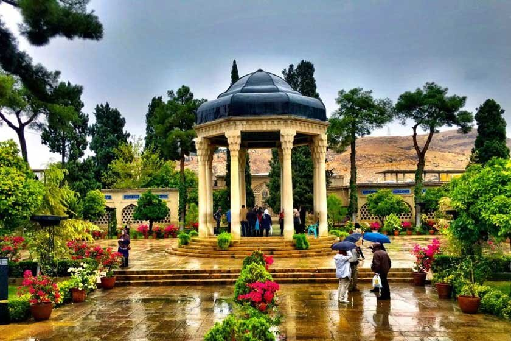
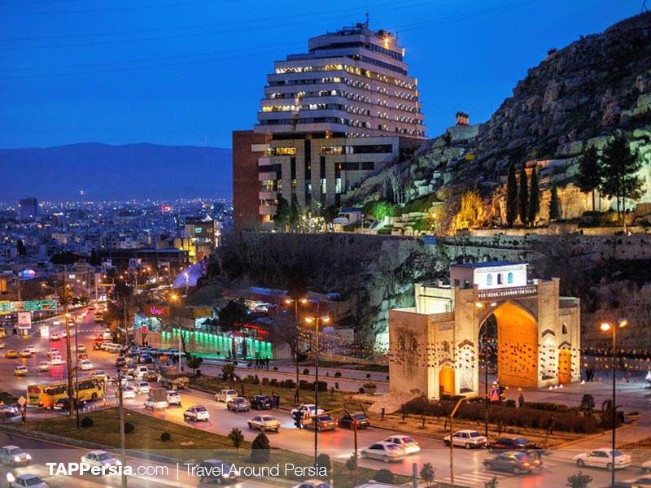

شیراز یکی از کلانشهرهای ایران و مرکز استان فارس در جنوب کشور است. جمعیت شیراز در سال ۱۳۹۵ خورشیدی، بالغ بر ۱٬۵۶۵٬۵۷۲ تن بوده، که این رقم با احتساب جمعیت ساکن در حومهٔ شهر به ۱٬۸۶۹٬۰۰۱ تن میرسد. شیراز پنجمین شهر بزرگ و پرجمعیت ایران و پرجمعیتترین شهر جنوب کشور بهشمار میرود. شیراز به شهر شعر، شراب، باغ و گل و بلبل معروف است. شاعران معروف زیادی در این شهر زندگی می کردند و همین موضوع باعث شهرت جهانی شیراز به شهر شعر شده است . یکی دیگر از نمادهای این شهر باغ است . باغ در فرهنگ ایرانیان از جایگاه ویژهای برخوردار است و شیراز نیز از قدیم به داشتن باغهای بسیار و زیبا مشهور بودهاست. باغ های انگور موجود در شیراز سبب شهرت جهانی شراب شیراز در دنیا شدهاست. تعدادی از باغهای شیراز از لحاظ تاریخی بسیار با اهمیت هستند و بهعنوان مراکز مهم گردشگری نیز بهشمار میآیند. از معروفترین این باغها میتوان به باغ جهان نما، باغ ارم ، باغ دلگشا و باغ عنیف آباد اشاره کرد. شهر شیراز در بین سالهای ۱۳۴۷ تا ۱۳۵۷ محل برگزاری جشن هنر شیراز بود. این جشنواره در زمان خود بزرگترین رویداد فرهنگی در نوع خود در سطح جهان بود که محلی برای گرد امدن بزرگترین هنرمندان سنتی مدرن ایران در سراسر دنیا و در رشته های مختلف هنری بود. [5]
شیراز در بخش مرکزی استان فارس، در ارتفاع ۱۴۸۶ متر از سطح دریا و در منطقهٔ کوهستانی زاگرس واقع شده و آب و هوای معتدلی دارد. این شهر، از سمت غرب به کوه دراک، از سمت شمال به کوههای بمو، سبزپوشان، چهلمقام و باباکوهی (از رشتهکوههای زاگرس) محدود شدهاست. [5]
شیراز، سومین شهر ایران بود که پس از تبریز و تهران، در سال ۱۲۹۶ خورشیدی، نهاد شهرداری در آن تأسیس شد.[۶][۷] شهرداری شیراز به ۱۱ منطقهٔ مستقل شهری، تقسیم شده و جمعاً مساحتی بالغ بر ۲۴۰ کیلومتر مربع را شامل میشود. شیراز بهشت گردشگران با سلیقه های مختلف ! جاذبه های گردشگری شیراز آنقدر متنوع و فراوان است که هر سلیقه ای را پوشش می دهد و حتی ممکن است با یک بار سفر به شیراز نتوانید از تمامی جاذبه های آن دیدن کنید . جاذبه های گردشگری شیراز در دسته های مختلف : طبیعی تاریخی فرهنگی و مذهبی جای می گیرند که تنها تعدادی از آن ها را در اینجا می بینید . [6]
نام شیراز در کتابها و اسناد تاریخی، با نامهای مختلفی نظیر: «تیرازیس»، «شیرازیس» و «شیراز» به ثبت رسیدهاست. محل اولیهٔ این شهر در محل قلعهٔ ابونصر بودهاست. شیراز در دوران بنیامیه به محل فعلی منتقل میشود، و به بهای نابودیِ اصطخر – پایتخت قدیمیِ فارس – رونق میگیرد. این شهر در دوران صفاریان، بوییان و زندیان، پایتخت ایران بودهاست. [7]
شیراز از دیرباز به واسطهٔ مرکزیت نسبیاش در منطقهٔ زاگرس جنوبی و واقعشدن در یک منطقهٔ به نسبت حاصلخیز، محلی طبیعی برای مبادلات محلی کالا بین کشاورزان، یک جانشینان و عشایر بودهاست. همچنین این شهر در مسیر راههای تجاری داخل ایران به بنادر جنوب مانند بندرعباس و بندر بوشهر قرار گرفتهاست. [8]
شیراز به سبب جاذبههای تاریخی، فرهنگی، مذهبی و طبیعی فراوان، همواره گردشگران بسیاری را به سوی خود فرامیخواند.[۸] بیشینه مردم شیراز فارسیزبان هستند و به لهجه شیرازی سخن میگویند. شیراز پنجمین شهر پرجمعیت ایران، پایتخت فرهنگی ایران، دومین شهر ادبی جهان و سومین شهر مذهبی ایران است. [9]
در سفر به شیراز، شاید اولین چیزی که نظر همه گردشگران را به خود جلب میکند، وجود هنرهای مختلف است . در کل
یکی
از
بهترین راههای شناخت مردم هر منطقه، مطالعه صنایع دستی آنهاست.صنایع دستی شیراز به طور قابل توجهی غنی است.
به
طوری
که احتمال اینکه از این شهر دست خالی برگردید بسیار کم است .در کنار این صنایع دستی ارزشمند خوراکی های
شیرازی
بسیار
معروف است و قطعا یکی از لذت های سفر به شهر شیراز خوردن این خوراکی های سنتی و تهیه آن به عنوان سوغاتی شهر
است
.
[10]
یوخه
یوخه یکی از شیرینی های سنتی شهر شیراز است که از آرد گندم، شکر ،تخم مرغ، دارچین و هل تهیه می شود .خمیر این
شیرینی
را به صورت خیلی نازک پهن کرده و برش می دهند و با پودر قند ،پودر پسته ، پودر نارگیل یا خلال بادام تزیین می
کنند .
کلوچه مسقطی
کلوچه مسقطی در واقع دو تا از خوراکی های خوشمزه شیرازی است که در کنار یکدیگر سرو می شود کلوچه شیرازی از آرد
پودرقند گلاب و تخم مرغ تهیه میشه و با تخم خرفه تزیین می شود . مسقطی نیز از پودر نشاسته و گلاب و آب و شکر و
زعفران تهیه میشود و طعم های مختلف و دلپذیری دارد .
بهار نارنج
شیراز شهر بهار نارنج است . در شیراز می توانید عطر بهار نارنج را در سرتاسر شهر استشمام کنید و خوراکی های ناشی
از
آن مثل عرق بهار نارنج مربای بهار نارنج را به عنوان سوغات از شهر شیراز خریداری کنید.
لیموی شیرازی
لیموی شیراز به عنوان یکی از با کیفیت ترین و خوشمزه ترین مرکبات این شهر جزو سوغات شیراز محسوب می شود. شما می
توانید در فصل تابستان این میوه خوشمزه را به عنوان سوغاتی از شیراز خریداری کنید .
بادام سوخته
بادام سوخته نیز یکی از شیرینیهای سنتی و مقوی ایرانی است که در شهر شیراز نیز تهیه می شود برای درست کردن این
شیرینی بادام های سوخته را با شکر و آب مخلوط می کنند و حرارت می دهند و پس از آب شدن شکر یک پوشش شیرین روی
بادام
ها را میگیرد و طعم آن را متفاوت و خوشمزه میکند.
| ژانویه | فوریه | مارس | آوریل | مـــــه | ژوئـن | ژوئیـه | اوت | سپتامبر | اکتبـر | نوامبر | دسامبر | |
|---|---|---|---|---|---|---|---|---|---|---|---|---|
| گرم ترین | 25 | 36 | 45 | 42 | 30 | 24 | 23 | 31 | 37 | 39 | 40 | 36 |
| سرد ترین | 12- | 7- | 2- | 2- | 7 | 11 | 16 | 12 | 7 | 2 | 5- | 5- |
| میانگین بارش | 82.1 | 43.1 | 48.2 | 30.4 | 7.6 | 0 | 2.5 | 2.5 | 2.5 | 0 | 0 | 5 |